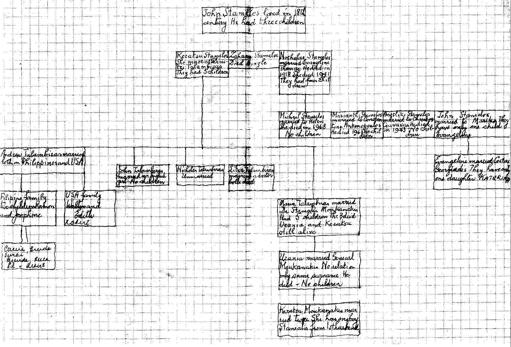

Family Tree
Andres Talambiras
1881 Jul 21
- 1966 May 03
Athens, GreeceDimitri Talambiras
Grandfather
Great-grandfather Great-grandmother Grandmother
Great-grandfather Great-grandmother Keratsu Stamelos
John Stamelos
b. 18th centuryGreat-grandfather Great-grandmother Grandmother
Great-grandfather Great-grandmother
by Viktor E. Medrano
The following diagram was supplied by Vivian Cruz née Talambiras, daughter of Ramon Palacios Talambiras. [Additional new information not on diagram: John Talambiras is the son of Robert Talambiras, son of Andres (Andrew) Talambiras.]
